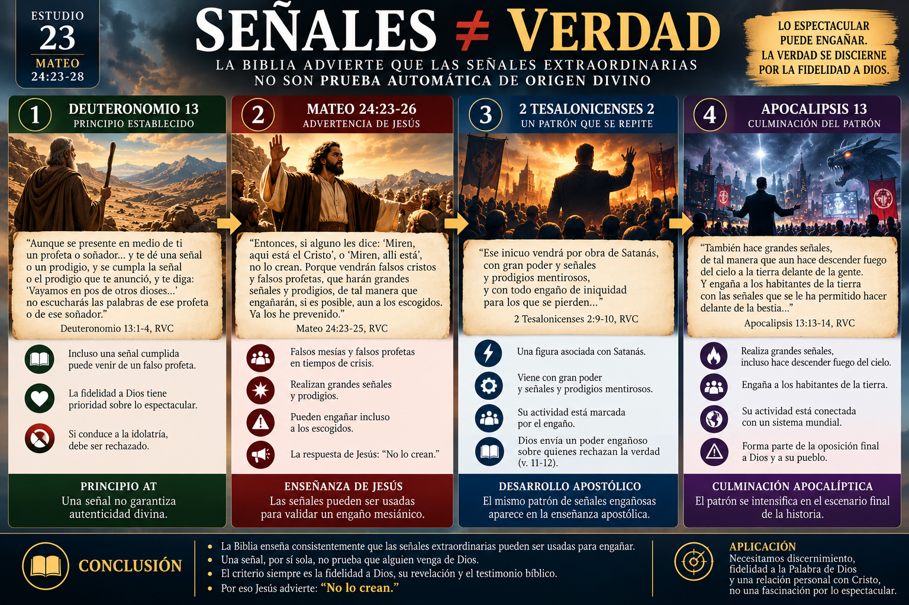
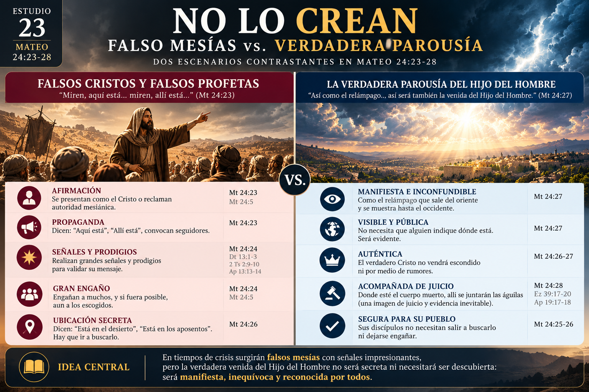
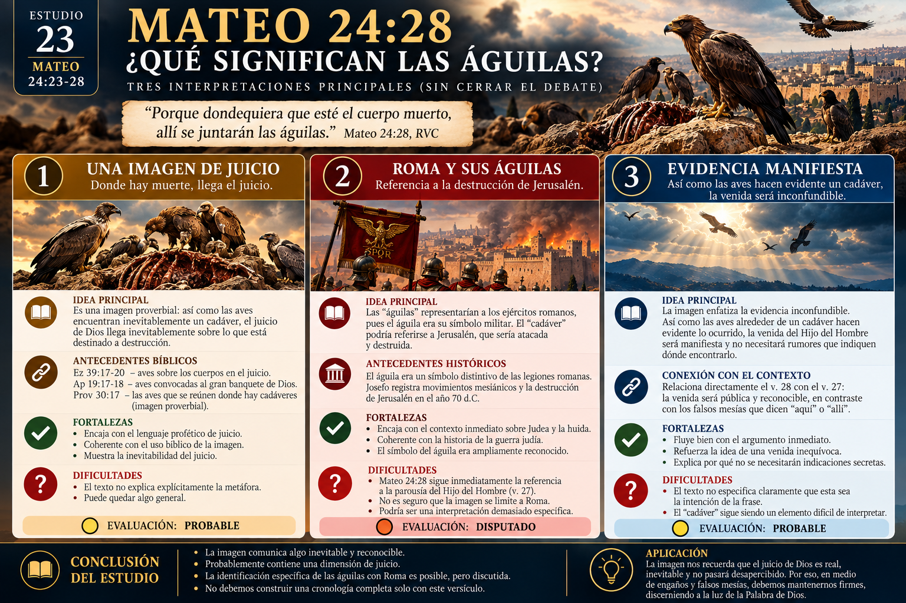
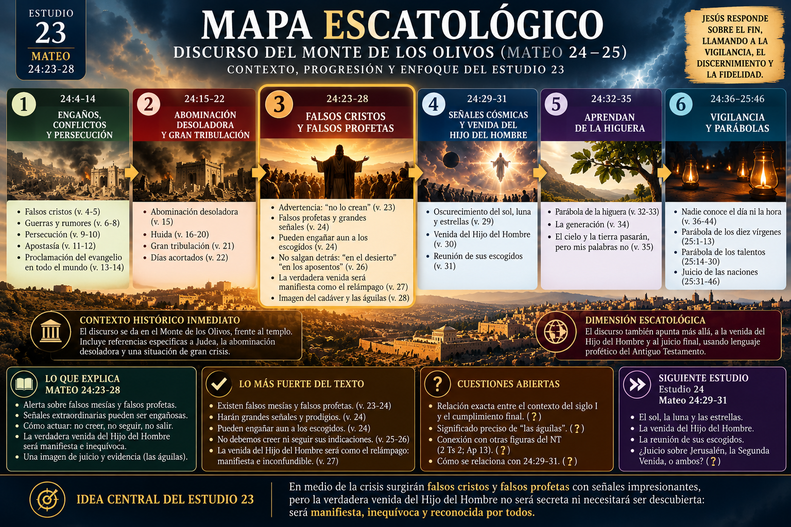

🎯 Pregunta central
Después de hablar de la abominación desoladora y de una gran tribulación (Mt 24:15–22), Jesús introduce una advertencia muy concreta:
“Entonces, si alguno les dice: ‘Miren, aquí está el Cristo’, o ‘Miren, allí está’, no lo crean.”
¿Por qué esta advertencia aparece justo aquí?
La clave del pasaje parece ser esta: en medio de la crisis surgirían afirmaciones engañosas acerca de la presencia del Mesías, pero la verdadera venida del Hijo del Hombre no necesitaría ser descubierta mediante rumores secretos.
🟢 Evaluación inicial: muy fuerte
1. 📜 El texto: Mateo 24:23–28
El pasaje puede dividirse naturalmente en tres movimientos:
Mateo 24:23–24 — La advertencia
Aparecerán falsos cristos y falsos profetas capaces de producir señales extraordinarias.
Mateo 24:25–26 — La instrucción
Jesús insiste: no crean y no salgan detrás de ellos.
Mateo 24:27–28 — La razón
La venida del Hijo del Hombre será comparable al relámpago, seguida por una frase enigmática acerca del cadáver y las águilas/buitres.
engaño → advertencia → contraste con la verdadera venida.
🟢 Muy fuerte
2. 🔗 El contexto inmediato
No debemos leer los falsos cristos como un tema aislado. En Mateo 24:15–22 Jesús acaba de describir una situación de enorme peligro: la abominación desoladora, la necesidad de huir, una gran tribulación y días que deben ser acortados.
Y entonces dice: “Entonces…” Ese vínculo es importante.
En períodos de desastre, guerra y expectativa religiosa, alguien podía presentarse diciendo: “El Mesías está aquí.” Jesús advierte a sus discípulos que la crisis no debe llevarlos a seguir pretendientes mesiánicos.
“Porque vendrán muchos en mi nombre, y dirán: ‘Yo soy el Cristo’, y engañarán a muchos.”
Por tanto, los falsos mesías forman una especie de marco dentro del discurso: Mateo 24:4–5 → cuidado con el engaño; Mateo 24:23–26 → cuidado especialmente durante la crisis.
🟢 Muy fuerte
3. 👑 “Falsos cristos”
ψευδόχριστοι — pseudóchristoi
ψευδο- = falso · χριστός — christós = ungido / Mesías / Cristo
Por tanto: falsos mesías.
No necesariamente significa simplemente personas que dicen literalmente: “Soy Jesús de Nazaret”. La idea puede ser más amplia: pretendientes mesiánicos, personas que reclaman para sí una autoridad o misión salvadora asociada con las expectativas mesiánicas.
🟢 Que Jesús advierte sobre pretendientes mesiánicos: muy fuerte
🟡 Que todos necesariamente afirmarían explícitamente ser Jesús: no es necesario para el sentido del texto
4. 📣 “Falsos profetas”
ψευδοπροφῆται — pseudoprophētai
“Falsos profetas”.
Esto ya había aparecido anteriormente en Mateo 7:15, pero aquí adquiere una dimensión escatológica. Los falsos profetas pueden actuar como personas que legitiman falsas afirmaciones mesiánicas.
falso mesías → afirma poseer autoridad mesiánica
falso profeta → presenta señales o mensajes que respaldan esa afirmación
Esta relación es razonable, aunque Mateo no explica exactamente cómo interactúan ambas categorías.
🟡 Probable
5. ⚡ El problema de las señales
Jesús dice que estos personajes harán “grandes señales y prodigios”. Aquí aparece algo teológicamente importante: la Biblia no enseña que una señal extraordinaria sea automáticamente prueba de que alguien viene de Dios.
🟢 Antecedente bíblico muy fuerte
6. 🐍 Un patrón que aparecerá nuevamente
Más adelante encontramos algo semejante. En 2 Tesalonicenses 2, Pablo describe una figura cuya aparición está acompañada por “gran poder y señales y prodigios mentirosos”. Apocalipsis 13 describe otra figura realizando grandes señales.
señal extraordinaria ≠ autenticidad divina automática
Sin embargo, debemos ser cuidadosos. No podemos simplemente afirmar que los falsos cristos de Mateo 24 son exactamente las mismas figuras de 2 Tesalonicenses 2 y Apocalipsis 13. Eso requiere demostrar conexiones adicionales.
🟢 El patrón conceptual es claro.
🟠 La identificación directa entre todas esas figuras es disputada.

7. 😨 “Si fuera posible, aun a los escogidos”
Jesús lleva la advertencia al extremo: “…de tal manera que engañarán, si es posible, aun a los escogidos.” La expresión enfatiza la enorme capacidad de engaño.
Probablemente existe aquí una idea de preservación divina. Jesús no parece estar diciendo que los creyentes sean naturalmente inmunes al engaño. Precisamente por eso los está advirtiendo. La seguridad no produce pasividad.
🟡 Que la expresión sugiera preservación de los escogidos: probable
🟢 Que Jesús exige vigilancia y discernimiento: muy fuerte
8. 🏜️ “Está en el desierto”
“Si les dicen: ‘Miren, está en el desierto’, no salgan…”
El desierto tenía profundas asociaciones bíblicas: Israel había atravesado el desierto, Moisés había estado allí, Juan el Bautista desarrolló allí su ministerio y Jesús mismo fue llevado al desierto. Por eso podía tener resonancias de liberación, éxodo, renovación y expectativa mesiánica.
Pero debemos evitar convertir cada elemento en símbolo. Mateo podría simplemente estar describiendo lugares donde supuestos movimientos mesiánicos convocarían seguidores.
🟡 El trasfondo bíblico del desierto aporta significado.
🟠 Determinar cuánto simbolismo específico pretende Jesús es disputado.
9. 🏠 “Está en los aposentos”
La palabra griega es ταμεῖον — tameion. Puede referirse a una habitación interior, privada o escondida.
“Está escondido aquí.”
“Vayan hasta allí.”
“Nosotros sabemos dónde está.”
Jesús responde: No lo crean.
¿Por qué? Porque la verdadera venida del Hijo del Hombre no será de esa naturaleza.
10. ⚡ “Como el relámpago”
“Porque así como el relámpago que sale del oriente se muestra hasta el occidente, así será también la venida del Hijo del Hombre.”
παρουσία — parousía
Puede significar presencia, llegada o venida. Aquí describe la parousía del Hijo del Hombre.
Falsos mesías
“Está aquí.”
“Está allá.”
“Está escondido.”
“Vengan a verlo.”
Hijo del Hombre
⚡ Como el relámpago que atraviesa el cielo.
La verdadera venida no necesitará rumores que indiquen dónde encontrar al Mesías.
🟢 Muy fuerte

11. 👁️ ¿Significa que todo el planeta lo verá simultáneamente?
Mateo 24:27 por sí solo probablemente no intenta explicar la mecánica física de la Segunda Venida. La comparación tiene una función inmediata: relámpago visible e inconfundible versus Mesías escondido que alguien debe señalarte.
🟢 La venida será manifiesta e inequívoca: muy fuerte
🟠 Que este versículo explique exactamente cómo será observada geográficamente por toda la humanidad: disputado
12. 🤫 ¿Una venida secreta?
Este texto es importante para esa discusión. Mateo presenta una oposición bastante clara entre un Mesías supuestamente escondido y la imagen del relámpago.
Esto hace difícil interpretar esta parousía específica de Mateo 24:27 como una aparición esencialmente secreta o detectable solamente por un grupo informado.
🟢 La parousía descrita aquí es manifiesta y no necesita localización secreta: muy fuerte
13. 🦅 “Donde esté el cadáver…”
“Porque dondequiera que esté el cuerpo muerto, allí se juntarán las águilas.”
ἀετοί — aetoi
Normalmente significa águilas, aunque el contexto de un cadáver hace pensar naturalmente en aves carroñeras, y por eso algunas traducciones e intérpretes entienden buitres.
Aquí comienzan las dificultades.
14. 🦅 Interpretación 1 — Una imagen de juicio
Una interpretación entiende el dicho como una imagen proverbial: donde existe corrupción/muerte, inevitablemente llega el juicio.
Así como las aves encuentran un cadáver, el juicio encuentra aquello que está destinado a destrucción. Esto encajaría bien con el lenguaje profético bíblico. Ezequiel 39 presenta aves reuniéndose sobre los cuerpos después del juicio divino; Apocalipsis 19 utiliza una imagen semejante.
🟡 Interpretación probable
Pero Mateo no explica explícitamente la metáfora.
15. 🦅 Interpretación 2 — Roma y sus águilas
El águila era utilizada como símbolo militar romano. Por eso algunos entienden: cadáver → Jerusalén y águilas → ejércitos romanos.
La frase sería entonces una referencia indirecta a la destrucción de Jerusalén en el año 70 d.C. Esta interpretación resulta especialmente interesante porque el contexto anterior habla de Judea, huida, una crisis histórica y Jerusalén en el paralelo de Lucas 21.
Pero existe un problema importante: Mateo 24:28 aparece inmediatamente después de la comparación de la parousía del Hijo del Hombre con el relámpago. Por eso no es seguro que las “águilas” deban identificarse directamente con las legiones romanas.
🟠 Disputado
16. 🦅 Interpretación 3 — La inevitabilidad y evidencia de la venida
Otra posibilidad entiende el proverbio en relación directa con el versículo 27. Así como la presencia de aves alrededor de un cadáver hace evidente lo ocurrido, la venida del Hijo del Hombre será inequívoca.
No necesitarás que alguien diga: “Está escondido en aquella habitación”. La evidencia será manifiesta.
🟡 Probable
Sin embargo, sigue siendo difícil establecer exactamente qué función cumple el “cadáver”.

17. ❓ Entonces, ¿qué significa Mateo 24:28?
🟢 La imagen comunica algo inevitable y reconocible.
🟡 Probablemente contiene también una dimensión de juicio.
🟠 La identificación específica de las águilas con Roma es posible pero discutida.
🔴 Construir una cronología escatológica completa basándonos solamente en “águilas” y “cadáver” sería especulativo.
❓ Mateo 24:28 → juicio / inevitabilidad / evidencia manifiesta.
No necesitamos resolver más de lo que el texto permite.
18. 🏛️ ¿Hubo falsos mesías alrededor del siglo I?
Sí tenemos testimonios antiguos de movimientos proféticos y figuras que reunieron seguidores durante el período cercano a la guerra judía contra Roma. Josefo describe personajes que prometían señales de liberación y reunían multitudes, incluido un personaje conocido como “el Egipcio”. Hechos 21:38 incluso menciona a “el egipcio” relacionado con una revuelta.
Esto hace históricamente plausible el tipo de escenario descrito por Jesús: crisis política y religiosa → expectativa de liberación → líderes carismáticos → promesas extraordinarias.
🟢 El fenómeno histórico general está bien documentado.
🟠 No podemos demostrar que cada personaje mencionado por Josefo sea cumplimiento directo de Mateo 24:23–24; las identificaciones individuales son discutibles.
19. ⏳ ¿Siglo I o futuro?
🏛️ Lectura principalmente preterista
Entiende que Jesús está advirtiendo principalmente a sus discípulos acerca de falsos libertadores y profetas que aparecerían antes de la destrucción de Jerusalén.
Fortaleza: el contexto inmediato de Judea y la huida.
Dificultad: explicar exactamente cómo debe entenderse la “parousía” del versículo 27.
🌍 Lectura principalmente futurista
Entiende que los falsos cristos aparecerán especialmente durante una futura tribulación inmediatamente anterior a la Segunda Venida.
Fortaleza: la conexión natural entre el versículo 27 y la venida manifiesta del Hijo del Hombre.
Dificultad: debe explicar adecuadamente las referencias muy concretas a Judea y al contexto histórico del discurso.
🔄 Lectura tipológica o de doble horizonte
Entiende que la crisis del siglo I proporciona un cumplimiento histórico real, pero que el patrón de engaño y tribulación culminará antes de la venida final de Cristo.
Ventaja: permite tomar seriamente tanto el contexto histórico como la dimensión escatológica.
Peligro: introducir un “doble cumplimiento” simplemente para solucionar cualquier dificultad.
🟡 La existencia de un patrón que puede repetirse es razonable.
🟠 Que cada detalle tenga exactamente dos cumplimientos es disputado.
20. 🔍 ¿Cuál lectura parece más fuerte hasta aquí?
Sin resolver todavía Mateo 24:29–31, podemos decir algo importante. El contexto histórico del siglo I no debe descartarse. Jesús está hablando a discípulos concretos, menciona Judea y describe circunstancias que encajan significativamente con la crisis que culminaría en Jerusalén.
Pero Mateo 24:27 introduce explícitamente la parousía del Hijo del Hombre, utilizando una imagen extraordinariamente pública y manifiesta.
Por eso todavía sería prematuro afirmar: “Todo terminó en el año 70.”
Pero también sería prematuro afirmar: “Nada de esto tiene que ver con el siglo I.”
La lectura contextual más responsable, en este punto del estudio, mantiene ambas dimensiones bajo examen.
🟢 Contexto histórico del siglo I: muy fuerte
🟢 Contraste entre falsos mesías y la parousía manifiesta: muy fuerte
🟠 Relación cronológica exacta entre Jerusalén y la Segunda Venida: todavía disputada
❓ Mateo 24:29–31 será decisivo para avanzar.
21. ✝️ El centro cristológico
El énfasis de Jesús no está en enseñar a sus discípulos a identificar cada impostor. Está enseñándoles a conocer suficientemente al verdadero Cristo como para no correr detrás de imitaciones.
Eso cambia el enfoque. La escatología de Jesús no produce obsesión con señales. Produce fidelidad.
No dice: “Persigan todo fenómeno extraordinario”.
Dice: “No lo crean.”
No dice: “Corran detrás de quien afirme conocer mi ubicación”.
Dice: “No salgan.”
La esperanza cristiana no depende de encontrar al Cristo escondido. Cuando venga verdaderamente el Hijo del Hombre, no necesitará publicidad secreta que anuncie dónde encontrarlo.
🧭 Mapa Escatológico — actualización del Estudio 23
Podemos agregar estas piezas sin cerrar todavía el debate:
Mateo 24:4–14
↓
engaños + conflictos + persecución + proclamación
Mateo 24:15–22
↓
abominación desoladora + huida + gran tribulación
Mateo 24:23–26
↓
⚠️ falsos cristos + falsos profetas + señales engañosas
Mateo 24:27
↓
⚡ parousía manifiesta del Hijo del Hombre
Mateo 24:28
↓
🦅 juicio / inevitabilidad / evidencia ❓
Mateo 24:29–31
↓
❓ próxima pieza decisiva
Todavía no cerramos una cronología completa.

📊 Conclusiones
| Afirmación | Evaluación |
|---|---|
| Jesús advierte sobre falsos pretendientes mesiánicos | 🟢 Muy fuerte |
| Los falsos profetas realizarán señales impresionantes | 🟢 Muy fuerte |
| Las señales por sí solas no demuestran autenticidad divina | 🟢 Muy fuerte |
| La verdadera parousía contrasta con un Mesías escondido | 🟢 Muy fuerte |
| Mateo 24:27 describe una venida manifiesta e inequívoca | 🟢 Muy fuerte |
| El siglo I ofrece un contexto histórico real para la advertencia | 🟢 Muy fuerte |
| Mateo 24:28 probablemente contiene una imagen de juicio/inevitabilidad | 🟡 Probable |
| Las “águilas” representan específicamente a Roma | 🟠 Disputado |
| Todo Mateo 24:23–28 se cumplió exclusivamente en el año 70 | 🟠 Disputado |
| Todo Mateo 24:23–28 pertenece exclusivamente al futuro | 🟠 Disputado |
| Cada detalle posee necesariamente un doble cumplimiento | 🔴 Especulativo |
💡 Idea central del estudio
Jesús prepara a sus discípulos para no confundir lo espectacular con lo verdadero: pueden aparecer falsos mesías acompañados de señales impresionantes, pero la auténtica venida del Hijo del Hombre no dependerá de rumores que digan “está aquí” o “está allá”; será manifiesta e inconfundible.
Esto nos deja exactamente en el punto correcto para el Estudio 24 — Mateo 24:29–31: sol, luna, estrellas y venida del Hijo del Hombre.
❓ ¿Jesús está describiendo la Segunda Venida, el juicio sobre Jerusalén mediante lenguaje profético del Antiguo Testamento, o existe alguna relación entre ambos?